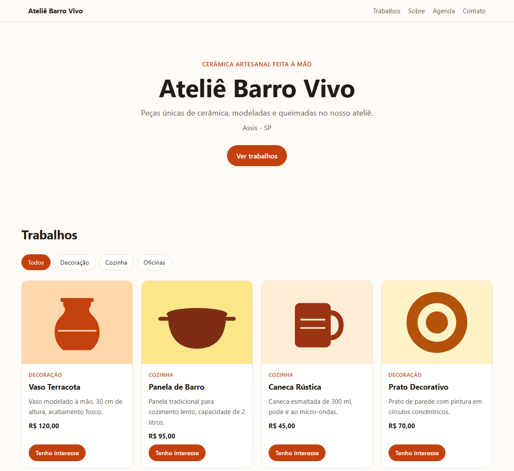

Guia passo a passo para artesãos, músicos, grupos de teatro e artistas criarem o próprio site de divulgação, de graça e sem saber programar
Muitos artistas e grupos culturais divulgam o trabalho apenas pelas redes sociais. Elas são ótimas, mas têm limites: as publicações antigas "somem" no meio do feed, nem todo mundo tem conta na mesma rede e o alcance depende do algoritmo.
Um site próprio funciona como uma vitrine permanente:
O Vitrine Cultural é um modelo pronto e gratuito. Você só troca os textos e as fotos, e o site fica no ar sem pagar hospedagem, usando o GitHub Pages, um serviço gratuito.

Exemplo do site com dados fictícios do "Ateliê Barro Vivo".
O GitHub é um site onde programadores guardam projetos. Ele também hospeda sites simples de graça, e é isso que vamos usar.
github.com e clique em Sign up (Cadastrar).https://SEU-USUARIO.github.io/...). Prefira algo curto e ligado ao seu trabalho, como ateliebarrovivo ou bandaoscaipiras. Use apenas letras minúsculas, números e hífen.O GitHub é em inglês. Por isso, neste guia, os nomes dos botões aparecem em inglês, com a tradução ao lado.
Agora você vai fazer uma cópia do modelo na sua conta. Ela será só sua e você poderá editá-la à vontade.
github.com/DaniloYam/vitrine-cultural.site ou portfolio.Pronto. Você agora tem uma pasta online, chamada "repositório", com estes arquivos:
| Arquivo / pasta | Para que serve | Vou mexer? |
|---|---|---|
dados.js | Todos os textos, contatos, trabalhos e agenda | Sim |
imagens/ | As fotos dos trabalhos | Sim |
index.html | Estrutura da página | Não |
estilo.css | Aparência do site | Não |
script.js | Monta a página com os seus dados | Não |
guia/ | Este guia | Não (pode até apagar) |
dados.js e a pasta imagens. O resto já está pronto.dados.js.nome: "Ateliê Barro Vivo", ^^^^ ^^^^^^^^^^^^^^^^^^^^ ^ | | └─ 3. a vírgula no final continua lá | └─ 2. o seu texto fica DENTRO das aspas └─ 1. não mude o nome antes dos dois-pontos
Se não quiser usar um campo, deixe as aspas vazias: instagram: "",. A informação simplesmente não aparece no site.
| Campo | O que colocar | Exemplo |
|---|---|---|
nome | Nome do artista, grupo ou ateliê | "Banda Raiz Caipira" |
tipoDeArte | O que você faz, em poucas palavras | "Música sertaneja de raiz" |
cidade | Cidade e estado | "Assis - SP" |
frase | Uma frase de apresentação | "Viola, causo e tradição desde 2010." |
corPrincipal | Cor do site (veja sugestões no arquivo) | "#15803d" (verde) |
sobre | Parágrafos sobre sua história, cada um entre aspas | — |
whatsapp | Só números: 55 + DDD + número | "5518999990000" |
instagram | Seu usuário, sem o @ | "bandaraizcaipira" |
email | E-mail de contato | "contato@email.com" |
endereco | Onde encontrar você | "Feira da praça, aos sábados" |
Cada trabalho é um bloco entre chaves { }. Para adicionar um trabalho, copie um bloco inteiro, cole logo abaixo e troque os dados. Para remover, apague o bloco inteiro, da chave { até },.
{
titulo: "Show acústico",
categoria: "Apresentações", // cria um botão de filtro
descricao: "Repertório de 1h30 para eventos e festas.",
preco: "Sob consulta",
foto: "imagens/show.jpg", // nome EXATO da foto
},
Trabalhos com a mesma categoria são agrupados, e o site cria botões de filtro automaticamente. O botão "Tenho interesse" abre o WhatsApp do visitante com a mensagem: "Olá! Vi no site e tenho interesse em: Show acústico".
Funciona do mesmo jeito. A data deve seguir o formato ano-mês-dia:
{
data: "2026-11-14", // 14 de novembro de 2026
titulo: "Feira de Artesanato da Praça",
local: "Praça central",
horario: "9h às 15h",
},
Eventos com data passada somem sozinhos do site. Se não houver nenhum evento futuro, a seção Agenda fica escondida.
Renomeie as fotos antes de enviar, com nomes curtos, sem espaços, sem acentos e em letras minúsculas:
| Evite | Prefira |
|---|---|
IMG_20261004_153022.jpg | vaso-azul.jpg |
Foto Caneca Rústica.JPG | caneca-rustica.jpg |
imagens.dados.js e, em cada trabalho, coloque o nome da foto: foto: "imagens/vaso-azul.jpg",As ilustrações de exemplo (vaso.svg, panela.svg etc.) podem ser apagadas depois que você colocar as suas fotos.
main e a pasta / (root). Clique em Save (Salvar).https://SEU-USUARIO.github.io/NOME-DO-REPOSITORIO/https://ateliebarrovivo.github.io/site/A partir de agora, toda vez que você salvar uma alteração no dados.js ou enviar uma foto, o site se atualiza sozinho em 1 ou 2 minutos.
imagens e copie um bloco no dados.js.agenda.| Problema | Causa provável | Solução |
|---|---|---|
| Site todo em branco | Aspa ou vírgula faltando no dados.js | Confira a última parte que você mudou: cada texto entre aspas e uma vírgula no fim da linha. |
| Foto não aparece | Nome diferente do arquivo | O nome no dados.js tem que ser idêntico, inclusive maiúsculas: Vaso.JPG ≠ vaso.jpg. |
| Mudança não aparece | O site ainda não atualizou | Espere 2 minutos e recarregue a página (Ctrl + F5 no computador). |
| Erro 404 (página não encontrada) | Pages não ativado ou endereço errado | Refaça o Passo 5 e confira o endereço mostrado em Settings → Pages. |
| Botão do WhatsApp não abre a conversa | Número em formato errado | Use só números, começando por 55 e o DDD. Sem espaços, traços ou parênteses. |
Vitrine Cultural é um projeto livre (licença MIT): pode usar, copiar e adaptar à vontade. Código-fonte e versão mais recente deste guia: github.com/DaniloYam/vitrine-cultural